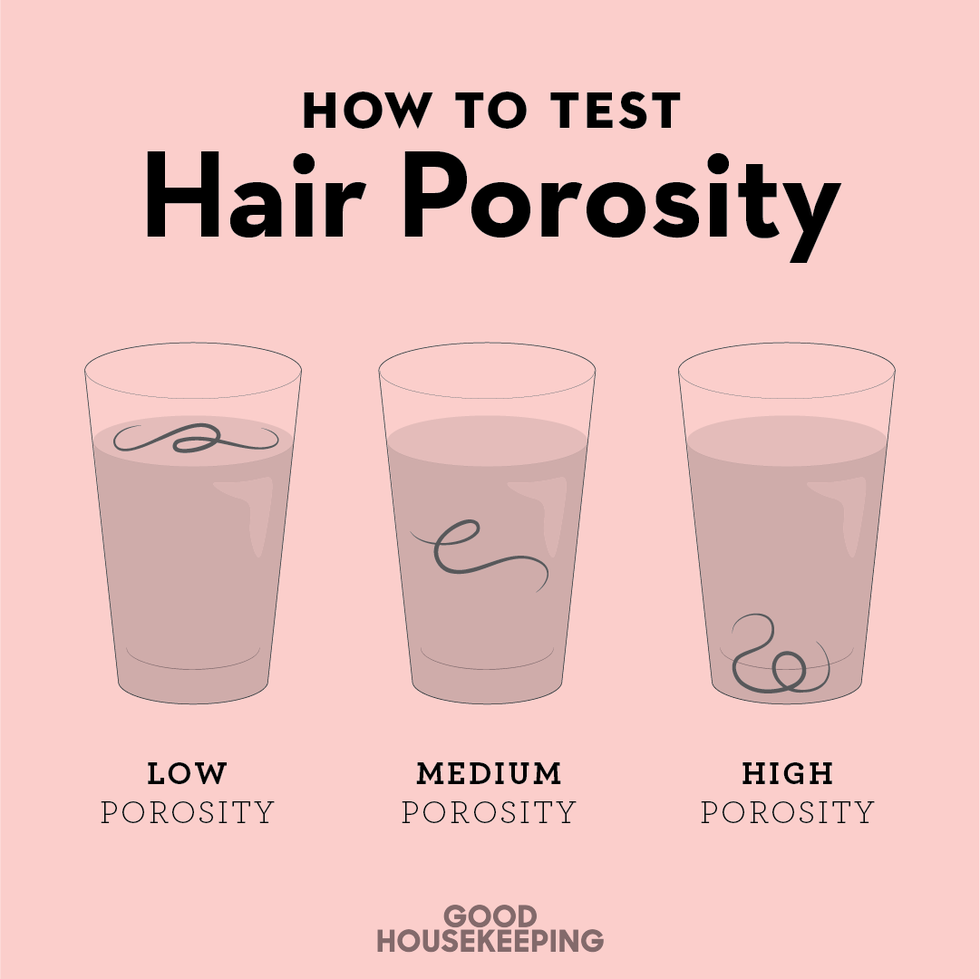

Porosity

Low Porosity
Characteristics:
Low porosity hair has a tightly bound cuticle layer, which makes it difficult for moisture to penetrate. The cuticles lay flat and resist water absorption.
Behavior:
Water beads up on the hair's surface rather than being absorbed quickly. Products may sit on the hair rather than being absorbed.
Challenges:
Low porosity hair may be prone to product buildup. Deep conditioning with heat or using lightweight, liquid-based products is often recommended.
Normal/Medium Porosity
Characteristics:
Normal porosity hair has a balanced cuticle layer, allowing it to absorb and retain moisture effectively.
Behavior:
Water beads up on the hair's surface rather than being absorbed quickly. Products may sit on the hair rather than being absorbed.
Challenges:
Normal porosity hair generally doesn't face significant challenges related to moisture retention.
High Porosity
Characteristics:
High porosity hair has a more open cuticle layer, allowing moisture to be absorbed quickly. This is often due to damage or natural gaps in the cuticle.
Behavior:
Hair with high porosity may absorb water rapidly but can also lose moisture quickly. It may feel dry and be more prone to frizz.
Challenges:
High porosity hair may require more frequent moisturizing. Sealing the cuticle with heavier oils and avoiding harsh treatments can be beneficial.
*****
It's important to note that hair porosity can be influenced by both genetics and external factors such as heat styling, chemical treatments, and environmental exposure. Understanding your hair's porosity can help you choose appropriate products and establish a hair care routine that addresses its specific needs.